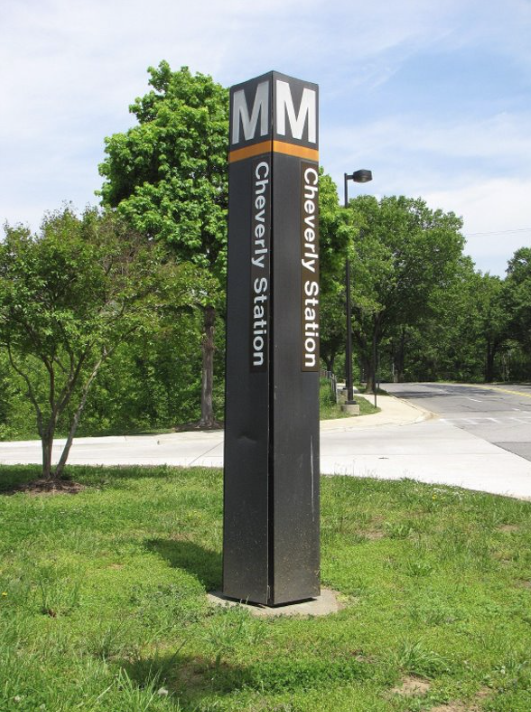
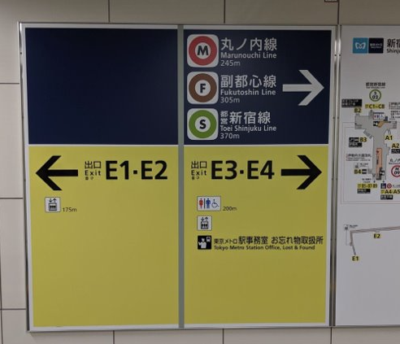
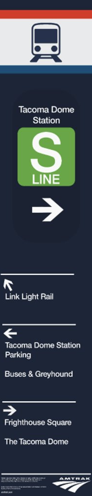
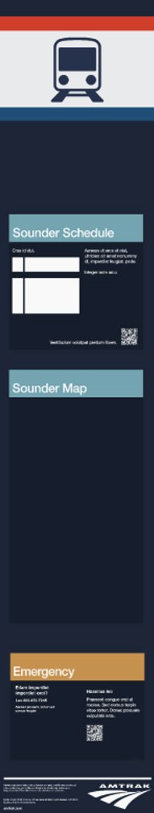
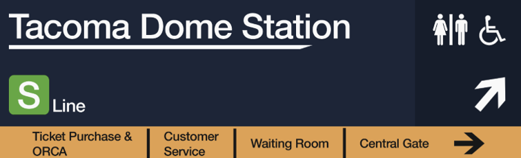
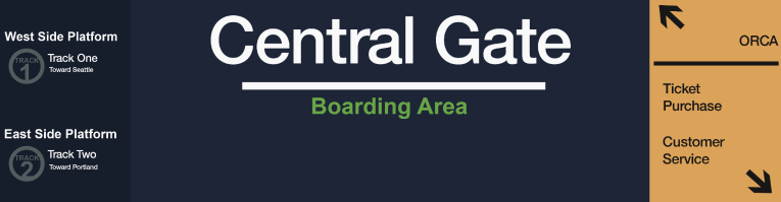

＜/WHO ARE WE.＞
In partnership with Amtrak, we were tasked with addressing challenges related to accessibility, user experience, and navigation at the Tacoma Amtrak station. Our team focused specifically on improving the signage system in and around the Amtrak station. We wanted to make it more intuitive, visually appealing, and effective for all users.
＜/DESIGN NARRATIVE.＞
Traveling is hard — even when it's just from one town to another, we know the stress and anxiety that can come with navigating through unfamiliar spaces. This stress is emphasized in high foot-traffic areas like the Tacoma Amtrak train station. That's why, from the very beginning of this project, our goal was to create clear, easy-to-read signage for inexperienced or first-time riders to make traveling less overwhelming. No matter what our final design looked like, we prioritized empathy. We kept new and anxious travelers at the forefront of our decision making.
＜/GATHERING INFORMATION.＞
To get an idea of the frequent pain points, we relied on a secondary research strategy; immersion. We wanted to know what it felt to be completely oblivious to an entirely new experience. We also referred to observational studies conducted in other transit systems such as the Link light rail in Seattle. Doing this preliminary work allowed us to brainstorm the most efficient and effective designs to solve the issues of new Amtrak users.
＜/THE VISIT.＞
Going into the station visit, we didn't look at google reviews or photographs from inside of the building. To get a more general understanding of a new rider, we walked from the UWT campus to the Amtrak station. When we arrived, we took photographs and made several observations of all the surrounding signage.
As we began walking from UW Tacoma, we noticed very few signs pointing toward the Amtrak station. Our group had to rely heavily on my phone's GPS just to find its general direction. When we had arrived at the west side of the building, we struggled to locate the main entrance. Not knowing where to go, the group entered a pair of doors guarded by security, assuming this was the main gate. I later realized this was the “Sounder Entrance.” This mistake lead me straight to the train tracks, which wasn;t where I wanted to be. Eventually I found a different pair of doors that finally led me into the Amtrak waiting room.
＜/OUR FINDINGS.＞
Station observations showed that Amtrak's wayfinding systems were not meeting modern expectations. Users need something that stands out — something that they can rely on while finding their destinations. One of our biggest goals moving forward was to bring some level of clarity and modern simplicity to the Amtrak station. Our designs were aiming to be functional to new customers, accessible by many, and simple.
Personal experience uncovered that the station was difficult to locate and navigate. This can be detrimental for riders that are running late or those who aren't familiar with the station. Our secondary design goal became creating something that demands attention from the individual by using bold colors and clear text. Combined with smart placement to guide people, these designs can be understood by just a glance.
＜/OTHER OBSERVATIONS.＞
Many signs around the station were old, faded, or damaged. This can negatively impact Amtrak's public image and discourage potential customers. Furthermore, signs appeared to be old, lacking proper direction and authenticity.
Existing signage is placed in unexpected or non-discernible locations, often found away from decision points or key intersections — places where pedestrians are more likely to walk from. There is a big missed opportunity to create consistent signage around the Tacoma area.
The way that the sign holders are designed are counterintuitive, angled or obstructed in confusing ways. Not only does it make information hard to see or interpret, it's difficult to make connections between pages.
＜/TARGET AUDIENCE.＞
Rather than assuming what users needed, we asked ourselves, “Who uses this station, and when?” Then we
identified three core groups.
Daily Commuters: This group of people focused primarily on speed and efficiency.
Occasional Riders: These were the individuals who may have some experience but still need guidance.
First-Time Users: People who were completely unfamiliar with both Amtrak and the process fell under this category.
We also considered time based behavior. Rush hour traffic, for example, could benefit from glancabe
signage compared to being more detailed. Many riders also approach the station
from many different directions (university, parking, city), which requires signage to be identifiable
from multiple angles.
＜/BEFORE WE SKETCH.＞
Our research led us to believe that wayfinding systems at Amtrak were not up to standard with most transportation competitors. Mainly, the Link Light Rail, which had many devices which commuters recugarly used in order to locate stations, trains, and accessibility. Then, before we began sketching, we started to wonder what signage looked like from other parts of the world, ultimately landing on two sources. This would give us a better idea of the direction we wanted to go in.

＜/METRO CENTER SIGNS.＞
Located in Washington, D.C., these signage pylons are used throughout various parts of the city to guide users into subway systems. Their appeal comes from their minimalistic design, using limited coloring and text. Despite their simplicity, they are attention grabbing and are very easy to spot, even in busy urban environments. Many riders often praise these pylons not just for their functionality, but also for their clean and modern aesthetic.

＜/TOYKUO SUBWAY SIGNS.＞
In Tokyo, Japan, subway systems are filled with signage similar to this example. These signs follow a unified form, using clean typography, simple icons, and a captivating pallet combination. Like the Washington, D.C. Pylons, Tokyo's signage stands out for its contemporary design, functional simplicity, while also being intuitively easy to follow. This level of consistency across such a large transit system reinforces the idea that good signage can greatly reduce confusion, even in crowded areas.
＜/ITERATIONS.＞
Before arriving at our prototypes, we went through multiple rounds of iterations and testing various color combinations, layout arrangements, and scrapping several designs of the same concept. Ultimately, we chose these designs because we believed they represented our goals the best. Since we began with the pylons, it took some time to find our footing and establish a unified and welcoming look. One of the biggest questions that guided our progress was, “How would someone with no prior knowledge of Amtrak react to this?”


＜/WAYFINDING PYLONS.＞
These are our final designs for the wayfinding pylon signs. They are intended to guide pedestrians toward the Amtrak station and would be strategically placed alongside sidewalks and high-foot-traffic areas. Designed with a front and rear-side for the best visibility, it would locate key areas of interest and give quick access to scheduling and map information. The inclusion of the S-Line icon acts as a quick marker for regular commuters, while first-time riders can refer to the back of the sign to understand its meaning.


＜/GUIDANCE SIGNS.＞
These are the final designs for our overhead hanging signage, commonly seen in airports and major train stations. They are designed to provide directional assistance while also highlighting key areas within the station that customers may find useful, such as restrooms, platforms, and waiting areas. These designs take cues from the Japanese subway system, particularly in its use of bright yellow backgrounds to emphasize high priority information like ticket purchasing and customer service.
＜/FURTHER TESTING.＞
Real passengers are at the heart of our project, empathy is what lead us to these designs. It follows that we should test how our design works in a real-world context and whether or not it improves navigation. Understanding how commuters interact with these prototypes can lead to a tailored experience. A simple experiment using temporary signage or by gathering direct feedback from commuters would give us more understanding for further iteration.